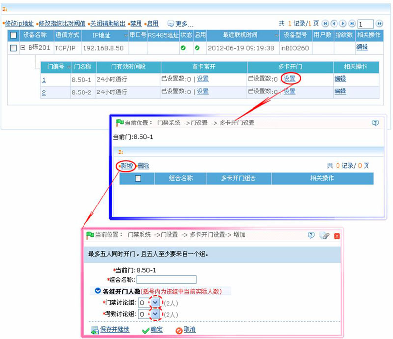

6.3.3 多卡开门
某些特定门禁场合需要启用多卡开门功能：要求同一个开门组合中指定人员同时到场，依次验证后才能通过，在没通过验证前，不能插入其他人员（即便是该门其他组合的有效人员），否则要等待10秒后重新验证。某个人单独到场验证不会开门。
1、设置多卡开门人员组，请参见多卡开门人员组。
2、多卡开门
为【多卡开门人员组】中的人员设置权限。
如果当前没有配置【多卡开门人员组】，系统会给出提示，用户只能够添加组合名称，系统允许用户先增加只有名称的组合，然后等到添加了【多卡开门人员组】后再编辑多卡开门组合。
多卡开门组合是对一个或多个多卡开门人员组以及组内人员的组合。在设置各组内的人数时，可以配置一个组（如一个组内2个人同时开门）或多个组（如一组内2人和二组内2人，四个人同时开门），至少有一个组需填入不为0的开门人数，同时所有开门人数总和不能大于5。另外，如果用户填入的人数大于当前组内的人数，多卡开门功能将无法正常实现。
 新增多卡开门设置：
新增多卡开门设置：
（1）、点击【门禁】 【门设置】，进入【门管理】页面，单击对应设备的门所在行的“多卡开门”下的【设置】按钮，进入多卡开门设置页面：
【门设置】，进入【门管理】页面，单击对应设备的门所在行的“多卡开门”下的【设置】按钮，进入多卡开门设置页面：

组合名称：输入该多卡开门的组合名称。
各组开门人数：设置各多卡开门人员组的开门人员。
 备注：多卡开门人数最多5人同时开门，括号内为该组中当前实际人数。通过下拉菜单选择某个组中需要同时开门的人数，【确定】完成设置。
备注：多卡开门人数最多5人同时开门，括号内为该组中当前实际人数。通过下拉菜单选择某个组中需要同时开门的人数，【确定】完成设置。
 注意：（a）、各组开门人数总和须<=5；（b）、开门人数>该组当前实际人数时，多卡开门功能将无法正常使用。
注意：（a）、各组开门人数总和须<=5；（b）、开门人数>该组当前实际人数时，多卡开门功能将无法正常使用。
（2）、设置完成后，单击【确定】按钮保存。